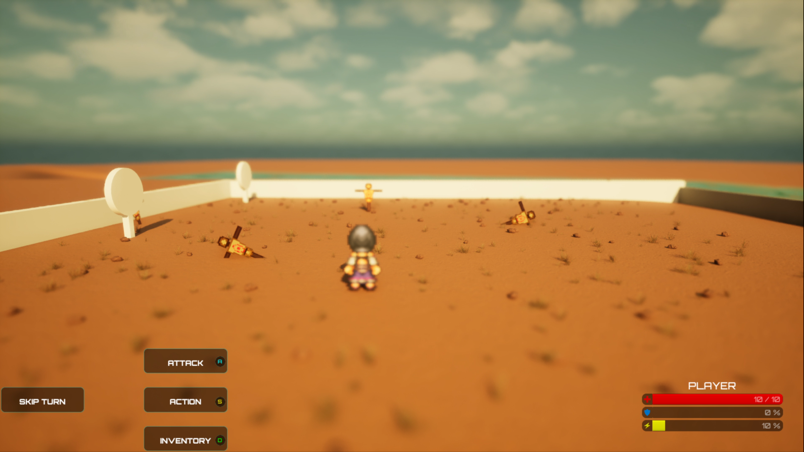
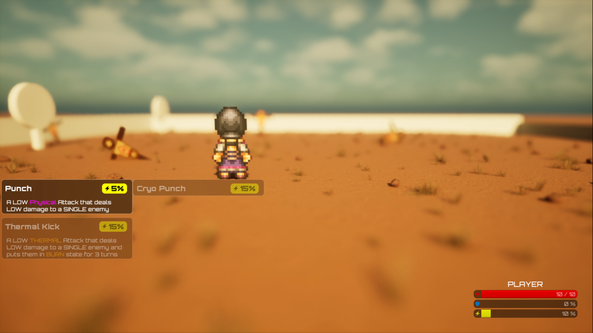
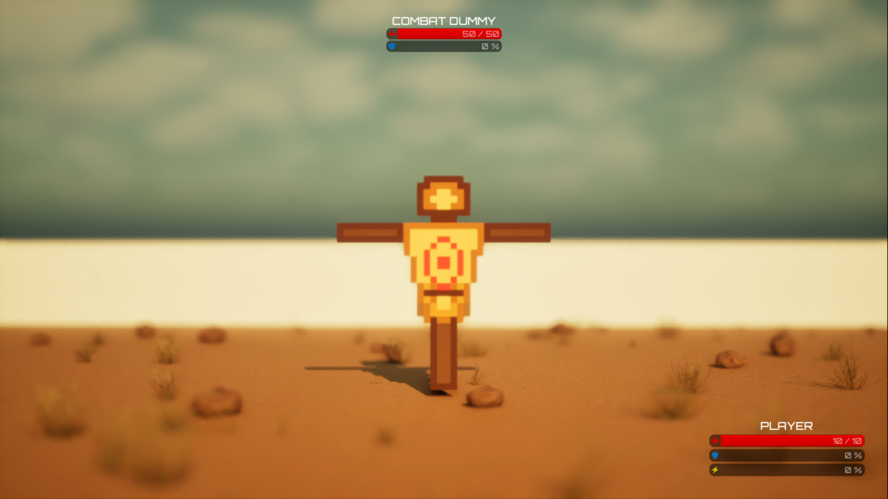
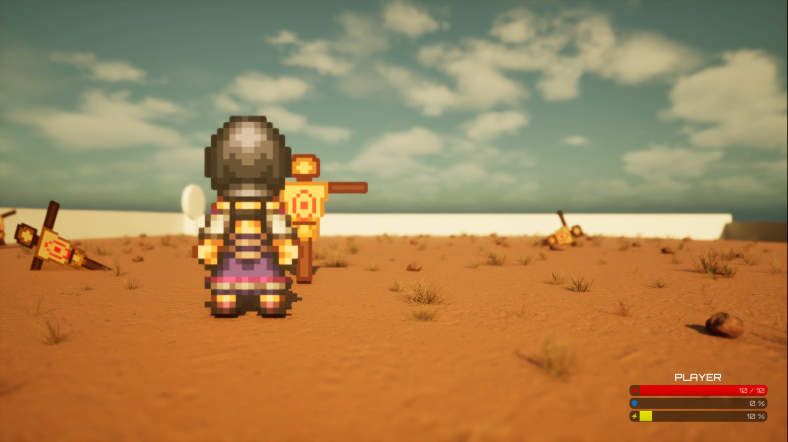

⚡ PROJECT PIXEL's: Turn-Based Combat System ⚡
Watch the complete combat of Boss Fight where the player faces two Enemies.
This video demonstrates the full turn-based system in action, showcasing turn order, charge management, and tactical decision-making in a real combat scenario.
This video demonstrates the full turn-based system in action, showcasing turn order, charge management, and tactical decision-making in a real combat scenario.
🎮 THE FOUNDATION
Turn-Based Combat in Project Pixel draws inspiration from original Final Fantasy games, combining classic turn-order mechanics with modern dynamic systems.
When players encounter enemies, they enter a Combat Level: an isolated level where turn order, charge management, and tactical decision-making determine victory.
Every combatant - player and enemy operates on the same fundamental rule: GAIN 10% CHARGE PER TURN, SPEND CHARGE TO EXECUTE MOVES.
The higher the charge cost, the powerful the action.
The higher the charge cost, the powerful the action.
The Core Loop: Watch turn order, manage charge, choose moves, execute, advance to next turn. Simple rules, infinite tactical depth.
⚡ KEY FEATURES ⚡
🔑 WHAT MAKES IT TICK
Speed-Based Turn Order
Turn order is not randomised. It's determined by each combatant's Speed attribute, a base stat that players invest in via skill points. High Speed = early turns. Low Speed = waiting longer. This means character building directly impacts combat flow.
Universal Charge Mechanic
Every turn, every combatant gains 10% charge. No exceptions. This creates predictability. You always know when you can afford that 30% Powerful attack.
But it also creates tension: "Can I survive until I reach 50% Charge that I can use to wipe out enemies?".
But it also creates tension: "Can I survive until I reach 50% Charge that I can use to wipe out enemies?".
Resource-Driven Decision Making
Limited charge means limited options. You can't spam one powerful attack always. You have to choose: take a cheap move now, or wait for enough charge to unleash a powerful move? Every turn is a mini-decision tree.
Elemental Depth
Thermal applies damage over time. Cryo freezes enemies, skipping their turns but reducing their damage intake. These aren't just damage numbers-they're strategic tools that change how enemies behave.
⚡ MULTI-CAMERA SYSTEM ⚡
🎥 DYNAMIC CAMERA PERSPECTIVES
Combat is inspired by classic JRPG turn-based systems with a modern twist enabled by HD-2D graphics and a dynamic multi-camera approach. The combat arena features three cameras behind the player, while each enemy has their own focus camera, creating dynamic perspective shifts that guide attention and build tension.

BATTLEFIELD MOOD
Triggered: Player performs an attack or browses Main Combat Menus
Sets the scene, emphasizes scale and environmental atmosphere. Shows the full battlefield scope.

PLAYER POSITIONING
Triggered: Player browses Moves menu
Enables players to strategize with full view of their positioning and available tactics.

PLAYER ATTACK
Triggered: Player selects target for attack move
Focuses attention on the chosen target, building commitment and impact visualization.

ENEMY TURN
Triggered: Player is being attacked
Shows impact and consequence, emphasizes enemy threat and incoming damage.
⚡ CAMERA PHILOSOPHY ⚡
💡 WHY DYNAMIC CAMERA MATTERS
Camera as Narrative Tool
The camera doesn't show the fight neutrally. It emphasizes where the player should look and feel. Each perspective shift reinforces the narrative moment-your action, the enemy's threat, or the environmental context.
Perspective Equality
By giving different camera angles for attack and defense, the fight feels less "you vs. puppet" and more "you vs. opponent." Both sides are equally powerful narratively, reinforced through camera treatment.
Tension Through Motion
Turn-based combat can feel static. Dynamic camera constantly moves-zooming, panning, focusing. This motion keeps energy high and prevents the turn-by-turn nature from becoming tedious.
⚡ SPEED DETERMINES WHO ACTS FIRST ⚡
📊 TURN ORDER MECHANICS
Turn order is not random. It's determined entirely by Speed attribute. This is a core design principle: character progression directly affects combat flow, not just damage numbers.
How It Works: At the start of combat, the system calculates turn order based on each combatant's Speed stat. Higher Speed = earlier in the rotation. This order persists throughout combat-you'll know exactly when your next turn is coming.
Example Turn Order:
1. Player (Speed: 25) - Your action first
2. Enemy A (Speed: 20) - Second action
3. Enemy B (Speed: 15) - Third action
1. Player (Speed: 25) - Your action first
2. Enemy A (Speed: 20) - Second action
3. Enemy B (Speed: 15) - Third action
In this example, you have Speed 25. Enemy A has 20. Enemy B has 15. You always go first, Enemy A goes second, Enemy B goes third. This repeats until combat ends. No surprises, just pure stat advantage through character building choices.
⚡ TURN ORDER IN PRACTICE ⚡
🎬 VISUAL EXAMPLES

Player goes twice
Requirements: Player Speed > 2 X Enemy Speed
Shows that player gets two turns before enemies get their first turn.

Player goes first
Requirements: Player Speed > Enemy Speed
Shows that player gets their turn first before enemies get their first turn.

High Speed Enemy goes first
Requirements: Fire Guy Speed > Player Speed > Freeze Girl Speed
Shows that player gets their turn after Fire Guy but before Freeze Girl.
Both Enemies Goes First
Requirements: Fire Guy Speed > Freeze Girl Speed > Player Speed
Shows that player gets their turn after Fire Guy and Freeze Girl.
⚡ TURN ORDER PHILOSOPHY ⚡
💡 KEY INSIGHTS
Predictability Enables Strategy
You know when your turn is coming. You know when the enemy acts. This predictability lets you plan: "Next turn I can Cryo, and they won't get a turn until after that." Turns become a resource you can navigate.
Speed Matters as Much as Damage
High Speed characters control the tempo. Going first every turn is a massive advantage. This incentivizes diverse character builds instead of min-maxing one stat. Speed is a legitimate build path.
Multiple Enemies = Tactical Rhythm
With three combatants in the turn order, you're constantly managing "when do I act vs. when do they act?" If you're first, you set the tone. If you're last, you react. The turn order becomes a silent tactical layer.
Note: Turn order is discussed in depth in the Attributes & Skills page, where you'll learn which base stats influence Speed, and how to optimize your build for early turns or reactive play.
⚡ ENEMY AI & MOVE SELECTION ⚡
🤖 HOW ENEMIES CHOOSE THEIR MOVES
Enemies don't pick moves randomly. They use an intelligent scoring system that evaluates every available move based on current combat state. This creates challenging, unpredictable AI that adapts to player choices while remaining fair and balanced.
The Core Philosophy: Enemy AI evaluates moves based on Base Score, adjusted for charge availability and player status effects. The move with the highest score gets executed. This means enemies prioritize survival, tactical advantage, and strategic move selection-mimicking a skilled player.
⚡ AVAILABLE MOVES ⚡
📋 MOVE CATALOG
Every character (player or enemy) has access to a catalog of moves. Each move has defined properties: charge cost, damage output, type (Physical, Cryo, Thermal), and base scoring value.
| Name | Moveset | Type | Charge | Damage | Req. Level | Base Score |
|---|---|---|---|---|---|---|
| Shield | Action | Physical | 10 | – | 1 | 10 |
| Heal | Action | Physical | 10 | – | 1 | 10 |
| Punch | Attack | Physical | 5 | 1 | 1 | 15 |
| Cryo Punch | Attack | Cryo | 15 | 0.75 | 1 | 15 |
| Freeze Wave | Attack - Ranged | Cryo | 20 | 1 | 1 | 20 |
| Thermal Kick | Attack | Thermal | 15 | 0.5 | 1 | 15 |
| Fire Blast | Attack - Ranged | Thermal | 15 | 0.75 | 1 | 20 |
⚡ MOVE SELECTION SCORING ⚡
🎲 HOW ENEMIES DECIDE WHAT TO DO
When an enemy's turn comes, they evaluate every available move. Each move receives a score based on multiple factors. The enemy selects the move with the highest score, creating intelligent, adaptive behavior.
Base Score
Every move has a predetermined Base Score that represents its general effectiveness. This value is set by designers and serves as the foundation for the move's tactical value. Higher Base Score = more valued move.
Charge Requirement Gate
If an enemy doesn't have enough Charge to execute a move, that move's score is automatically set to 0. This prevents enemies from selecting impossible moves. Enemies can only choose moves they can actually perform.
Health-Based Scoring
Enemy Low on Health? Healing moves (Shield, Heal) increase in score priority, making survival-oriented choices more attractive.
Player Low on Health? Aggressive attack moves increase in score, making finishing moves more attractive.
Player Low on Health? Aggressive attack moves increase in score, making finishing moves more attractive.
Status Effect Balancing
The AI adjusts move scores based on player status effects to maintain fairness:
Same Type Moves (Cryo on Frozen Enemy): Score is reduced by 50%. Why use Freeze Wave on a frozen enemy? It's a waste of charge.
Opposite Type Moves (Thermal on Frozen Enemy): Score is increased by 50%. Fire Blast on a frozen enemy exploits weakness-smart tactical play.
Same Type Moves (Cryo on Frozen Enemy): Score is reduced by 50%. Why use Freeze Wave on a frozen enemy? It's a waste of charge.
Opposite Type Moves (Thermal on Frozen Enemy): Score is increased by 50%. Fire Blast on a frozen enemy exploits weakness-smart tactical play.
⚡ SCORING IN PRACTICE ⚡
📊 EXAMPLE AI DECISION
Scenario 1: Enemy Turn with Multiple Options
Current State:
Enemy Health: 30/100 (Low)
Player Health: 80/100
Player Status: None
Enemy Charge: 15
Available Moves & Scoring:
1. Punch (Charge: 5, Base Score: 15)
→ Charge Available: YES
→ Status Adjustment: None
→ Final Score: 15
2. Heal (Charge: 10, Base Score: 10)
→ Charge Available: YES
→ Health Adjustment: +50 (Low health)
→ Final Score: 60 ← SELECTED
3. Freeze Wave (Charge: 20, Base Score: 20)
→ Charge Available: NO
→ Status Adjustment: None
→ Final Score: 0
Decision: Heal is chosen (Score: 60)
Why? Enemy is low on health, so survival is prioritised.
Enemy Health: 30/100 (Low)
Player Health: 80/100
Player Status: None
Enemy Charge: 15
Available Moves & Scoring:
1. Punch (Charge: 5, Base Score: 15)
→ Charge Available: YES
→ Status Adjustment: None
→ Final Score: 15
2. Heal (Charge: 10, Base Score: 10)
→ Charge Available: YES
→ Health Adjustment: +50 (Low health)
→ Final Score: 60 ← SELECTED
3. Freeze Wave (Charge: 20, Base Score: 20)
→ Charge Available: NO
→ Status Adjustment: None
→ Final Score: 0
Decision: Heal is chosen (Score: 60)
Why? Enemy is low on health, so survival is prioritised.
Scenario 2: Status Effect Balancing
Current State:
Enemy Health: 75/100
Player Health: 50/100
Player Status: Cryo (Frozen)
Enemy Charge: 30
Available Moves & Scoring:
1. Freeze Wave (Charge: 20, Base Score: 20)
→ Charge Available: YES
→ Status Adjustment: -50% (Player already frozen)
→ Final Score: 10
2. Fire Blast (Charge: 15, Base Score: 20)
→ Charge Available: YES
→ Status Adjustment: -50% (Thermal cancels Freeze on PLAYER)
→ Final Score: 10
2. Punch (Charge: 5, Base Score: 15)
→ Charge Available: YES
→ Status Adjustment: NONE
→ Final Score: 15 ← SELECTED
Decision: Punch is chosen (Score: 15)
Why? Enemy thinks it's better to Punch than removing Freeze from Player.
Enemy Health: 75/100
Player Health: 50/100
Player Status: Cryo (Frozen)
Enemy Charge: 30
Available Moves & Scoring:
1. Freeze Wave (Charge: 20, Base Score: 20)
→ Charge Available: YES
→ Status Adjustment: -50% (Player already frozen)
→ Final Score: 10
2. Fire Blast (Charge: 15, Base Score: 20)
→ Charge Available: YES
→ Status Adjustment: -50% (Thermal cancels Freeze on PLAYER)
→ Final Score: 10
2. Punch (Charge: 5, Base Score: 15)
→ Charge Available: YES
→ Status Adjustment: NONE
→ Final Score: 15 ← SELECTED
Decision: Punch is chosen (Score: 15)
Why? Enemy thinks it's better to Punch than removing Freeze from Player.
⚡ AI DESIGN PHILOSOPHY ⚡
💡 KEY INSIGHTS
Fairness Through Transparency
Enemies use the same move system as players. They don't have secret advantages or hidden stats. Players can predict enemy behavior by understanding how scoring works. This creates fair, learnable encounters.
Adaptive Without Being Unfair
AI adapts to player health, status effects, and tactical situations. But it does so within established rules. Enemies won't make impossible moves, and their scoring is transparent. Adaptation feels smart, not cheap.
Base Score: Designer Control
By adjusting Base Score, designers fine-tune enemy behavior. A higher Base Score for Shield makes enemies more defensive. A higher Base Score for Punch makes them aggressive. This is how encounter difficulty is tuned.
Status Effects Create Strategic Depth
Players don't just attack blindly-they choose move types strategically. Freeze enemies make them vulnerable to Thermal. Burn enemies might become threats if healed. This creates dynamic, tactical combat where every status matters.
⚡ FOUR PILLARS OF COMBAT DESIGN ⚡
🏛️ FOUNDATIONAL PRINCIPLES
These four pillars guided every decision in the Turn-Based Combat system. They are the foundation of the combat philosophy.
1
Clarity Over Complexity
Combat rules are simple: +10% charge per turn, spend charge on moves, turn order based on Speed. A new player understands the fundamentals in 30 seconds. But depth emerges from resource management and tactical timing. The complexity is earned, not forced.
2
Agency Over Automation
Every turn, the player decides. No auto-attacks, no passive damage, no invisible calculations. You choose Punch or Defend or wait for Cryo. You feel the weight of each decision. Combat is never something that happens to you-it's something you do.
3
Tension Over Dominance
Even when you're ahead, the next enemy turn is coming. Even when you're behind, you have charge building. There's always tension-a sense that things could flip. This prevents blowouts from being boring and comebacks from being unfair.
4
Story Through Systems
Combat isn't separate from narrative. Status effects (Thermal's burn, Cryo's freeze) tell a story about the elements. Turn order tells a story about your character's training. Charge management tells a story about caution vs. aggression. Systems are narrative.
⚡ SYSTEMIC CONNECTIONS ⚡
🔗 HOW SYSTEMS INTERACT
Turn-Based Combat isn't isolated. It connects to Progression (Speed investments), Elementals (Thermal/Cryo mechanics), and Quests (combat rewards). Everything reinforces everything else.
SKILL POINT INVESTMENT
(Speed, Accuracy, Evasion, Damage)
↓
Shapes Your Turn Order Position
↓
Determines When You Act Relative to Enemies
↓
Influences Combat Tactics & Strategy
↓
Elemental Moves Interact With Status Effects
↓
Victory Unlocks Quest Rewards & Story Progression
(New quests become available, NPCs respond to your combat success)
⚡ DESIGN LEARNINGS ⚡
💡 KEY INSIGHTS FROM BUILDING TURN-BASED COMBAT
Learning 1: Charge Predictability Beats Randomness
Early iterations used random charge gain. It was chaotic and frustrating. Switching to +10% every turn eliminated that chaos. Players could now plan. "Next turn I'll have 15% for Cryo" became possible. Predictability transformed combat from luck-based to strategy-based.
Learning 2: Speed Must Matter as Much as Damage
If Speed was just a bonus to turn order, nobody would invest in it. But when turn order determines who controls the tempo, Speed becomes essential. This created diverse builds: speedsters, tanks, balanced fighters-all viable.
Learning 3: Camera Movement Adds Tension Without Complexity
Turn-based combat can feel static. Dynamic camera-zooming on impacts, pulling back for overview-added visual excitement without changing core mechanics. The camera became a co-narrator, emphasizing moments, building tension.
Learning 4: Status Effects Need Tactical Weight
Thermal and Cryo aren't just damage numbers. They're tactical tools. Cryo skips turns. Thermal spreads damage. These effects create new tactical decisions: "Should I Cryo to control turns, or Thermal for damage?" Status effects are as important as raw stats.
Learning 5: Cheap Moves Prevent Downtime
A 5% Punch feels small, but it's crucial. Even when you can't afford your power move, you always have an option. This prevents frustration and keeps the player engaged. There's always something to do, even if it's not optimal.
Learning 6: Turn Order Persistence Creates Tactics
Turn order never changes mid-combat. This sounds limiting, but it's actually liberating. You know the exact sequence of who acts when. This lets you plan ahead: "I go, Enemy A goes, Enemy B goes" repeats forever. Plan within that structure.
Learning 7: Simple Rules, Complex Tactics
The core loop is dead simple: gain charge, spend charge, advance. But the decision tree is enormous. Do I Defend? Attack? Save charge? Build to a big move? Cryo to freeze? Thermal to damage? Simple rules created emergent complexity.